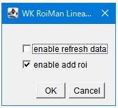

1st January 2026 at 5:23pm
WK_RoiMan_LinearFitting（ROIの直線近似）
1. 概要
選択した複数の点や線のROI座標を元に、最小二乗法を用いてそれらを代表する直線を算出します。 バラバラに配置されたオブジェクトが「どの程度の傾きで並んでいるか」といった回帰分析を行う際に使用します。
2. GUIの使い方

- enable_refresh_data: チェックを入れると、以前のフィッティング結果をリセットします。
- enable_add_roi: チェックを入れると、算出された近似直線を画像上に描画し、ROI Managerに追加します。
3. サンプル
以下の手順で試してみてください。
- [[こちら|https://github.com/WAKU-TAKE-A/IJSampleProgram/blob/master/Sample_WK_RoiMan_LinearFitting.zip]]からzipファイルをダウンロードしてください
- 全て展開します
- 全てのファイルをImageJで開きます（テキストも含みます）
OCV__LoadLibraryを実行します。RoiMan_LinearFitting_Macro.txtを実行（Macros -> Run Macro）してください。
「Analyze ⇒ Tools ⇒ Save XY Coordinates」で座標を抽出し、統計解析Rのlsfit()で検算してみました。
以下は統計解析Rでの出力です。比較してみてください。
| Intercept | X |
|---|---|
| 3.800000e+01 | 4.900502e-16 |
| -620.22207 | 7.82649 |
| 4235.72500 | -15.15677 |
| 340.50591729 | 0.07860645 |
4. 注意点
- 解析結果（傾き: Slope、切片: Intercept）はResultsテーブルに出力されます。
- 少なくとも 2つの座標点 が必要です。